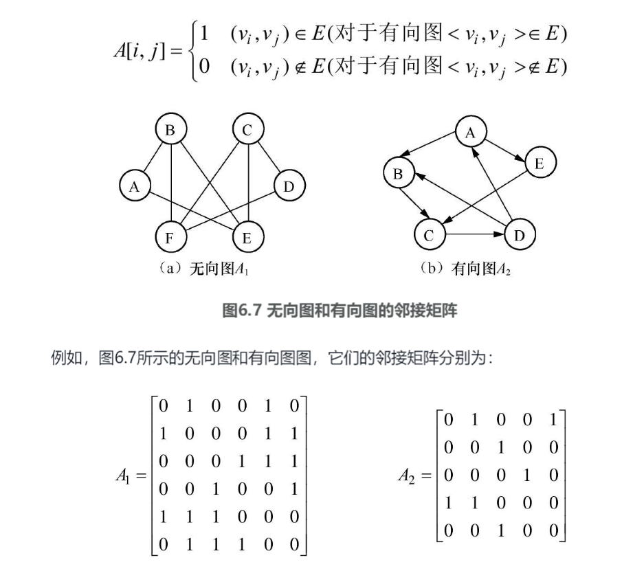

图
分类
是否有向
- 有向图（x,y）=（y,x）
- 无向图 <x,y>!=<y,x>
顶点与边的数量
- 完全图
- 无向图：n个结点，n(n-1)/2条边
- 有向图：n个结点，n(n-1)条边
- 稠密图
- 接近完全图
- 稀疏图
- 边少
- 网
- 边带有权重
术语
- 子图：
- 图的一部分
- 邻接点：
- 无向图中被一条边链接的顶点叫邻接点
- 度：
- 无向图中与一个顶点连接的边的数量
- 路径：
- 两个顶点之间的路径
- 路径长度
- 路径中边的个数
- 简单路径
- 不包含重复顶点的路径
- 回路
- 起点和结尾是同一个的路径
- 简单回路
- 没有其他重复顶点的回路
- 连通图
- 无向图中，任意两个顶点之间有路径
- 连通分量
- 无向图中，小的尽量连的连通图的个数（要包含所有顶点）
- 强连通图
- 有向图中，任意两个顶点之间有有向路径
- 强连通分量
- 有向图中，尽量连的强连接图的个数（要包含所有顶点）
存储结构
邻接矩阵


邻接表
邻接表（Adjacency List）是图的一种顺序存储与链式存储结合的存储方法。对于图G中的每个顶点Vi，将所有邻接于Vi的顶点Vj链成一个单链表，这个单链表就称为顶点Vi的邻接表，再将所有顶点的邻接表表头放到数组中，就构成了图的邻接表。在邻接表表示中，包括两种结点结构。一个是顶点结点，每个顶点结点由2个域组成，其中data域存储顶点Vi的名或其相关信息，firstArc指向顶点Vi的第一个邻接点的边结点；第二个是边结点，边结点由3个域组成。其中abjVex域存放与Vi邻接的点的序号，nextArc指向Vi下一个邻接点的边结点，info域存储和边或弧相关的信息，如权值

在有向图中，第i个链表的邻接表中的结点数只是顶点Vi的出度，为求入度，必须遍历整个邻接表。在所有邻接表中其邻接顶点域的值为i的结点的个数是顶点Vi的入度。所以，为了便于确定顶点的入度或者以顶点Vi为头的弧，可以建立一个有向图的逆邻接表，即对每个顶点Vi建立一个以Vi为头的弧的邻接表。如图6.12所示，图（b）所示为邻接表，也称出边表，图（c）所示为逆邻接表，也称入边表。

图的遍历
深度优先搜索DFS
则深度优先搜索遍历可定义为：
（1）首先访问出发点V。
（2）然后依次从V出发搜索V的每个邻接点W，若W未曾访问过，则以W为新的出发点继续进行深度优先搜索遍历，直至图中所有和源点V有路径相通的顶点（也称为从源点可达的顶点）均已被访问为止。
（3）若此时图中仍有未访问的顶点，则另选一个尚未访问的顶点作为新的源点重复上述过程，直至图中所有顶点均已被访问为止。
DFS(String[][] arr, int i, int j){
//判断越界和访问过标志 ，访问过标志可以用特殊符号替换原值等，使能检测出
if( i 越界|| j越界 || arr[i][j] 访问过)
return;
//访问数据
sout(arr[i][j]);
//标记已访问过
arr[i][j] = "访问过";
//对邻接结点做DFS
DFS(arr, i,j+1);
DFS(arr, i,j-1);
DFS(arr, i+1,j);
DFS(arr, i-1,j);
}
广度优先搜索BFS
则广度优先搜索遍历过程为：
（1）首先访问出发点V。
（2）接着依次访问顶点V的所有邻接点V1，V2，…，Vt。
（3）然后再依次访问顶点V1，V2，…，Vt的所有邻接点。
（4）依次类推，直至图中所有的顶点都被访问到。
BFS(String[][] arr, int i, int j){
//定义队列
Queue<int[]> q = new LinkedList<Integer>();
//结点入队
q.offer(new int[i][j])
while(!q.isEmpty()){
int size = q.size();
//一次循环取出队中所有的点，并遍历讲下一级的邻接点入队
for(int k = 0;k<size;k++){
int[] cur = q.poll();
//判断越界和访问过标志 ，访问过标志可以用特殊符号替换原值等，使能检测出
if( cur[0] 越界|| cur[1]越界 || arr[cur[0]][cur[1]] 访问过)
continue;
//访问结点
soutarr[cur[0]][cur[1]]);
arr[cur[0]][cur[1]] ="被访问过"
//邻接点入队
q.offer(new int[]{cur[0],cur[1]+1});
q.offer(new int[]{cur[0],cur[1]-1});
q.offer(new int[]{cur[0]+1,cur[1]});
q.offer(new int[]{cur[0]-1,cur[1]});
}
}
}